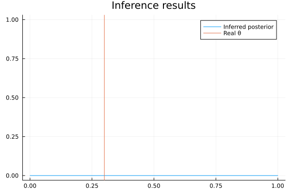
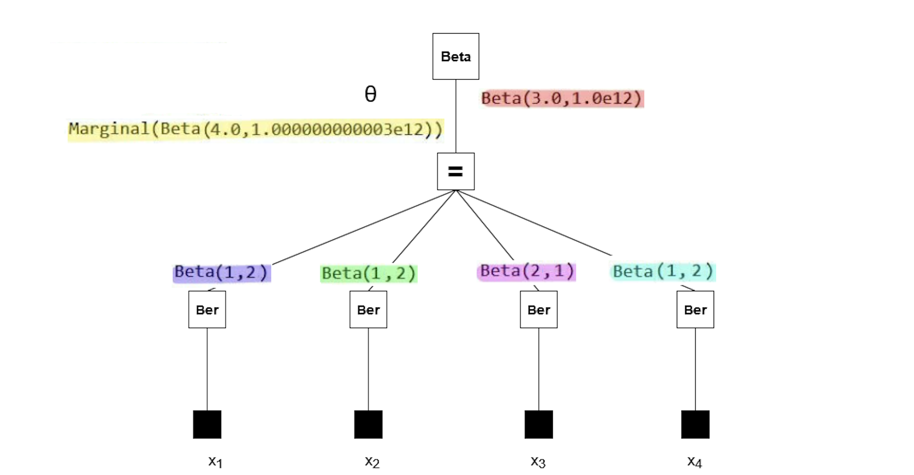
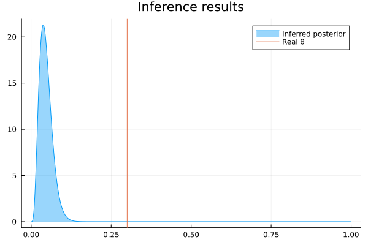
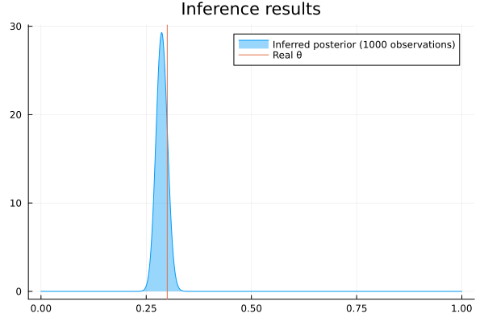

Debugging
Debugging inference in RxInfer can be challenging due to the reactive nature of the inference, undefined order of computations, the use of observables, and generally hard-to-read stack traces in Julia. This page covers several techniques to help you find and fix problems in your model.
- Trace inference events — use
RxInferTraceCallbacksortrace = trueto record every callback event. See Trace callbacks. - Trace the free energy — with
free_energy = true, the trace holds every node's and every variable's term of it, to find the node that makes it wrong. See Tracing the free energy. - Benchmark performance — use
RxInferBenchmarkCallbacksorbenchmark = trueto collect timing statistics. See Benchmark callbacks. - Custom callbacks — use the Callbacks system to inject arbitrary logic at any point during inference.
Getting Help from the Community
When you encounter issues that are difficult to debug, the RxInfer community is here to help:
Share Session Data: For complex issues, you can share your session data to help us understand exactly what's happening in your model. See Session Sharing to learn how.
Join Community Meetings: We discuss common issues and solutions in our regular community meetings. See Getting Help with Issues for more information.
Using callbacks to inspect the inference procedure
The Callbacks system lets you inject custom logic at specific moments during inference — for example, to print intermediate posteriors, track the order of updates, or collect diagnostics.
Below we show an application of callbacks to a model containing both scalar and vectorized latent variables.
using RxInfer
@model function vectorized_model(y)
local u
θ ~ Normal(mean= 1.0, var = 1.0)
for i in 1:2
u[i] ~ Normal(mean = θ, var = 1.0)
end
y .~ Normal(mean = u, var = 1.0)
endNext, let us define a synthetic dataset:
dataset = [1.0, 2.0]We define callbacks that track the order of posterior updates and their intermediate values for each variational iteration.
Since RxInfer passes a collection of posteriors when updating vectorized variables, we branch on posterior isa AbstractVector to handle vectorized updates (e.g., u) using broadcasted operations like mean.().
# A callback that will be called every time before a variational iteration starts
function before_iteration_callback(event)
println("--- Starting iteration ", event.iteration, " ---")
end
# A callback that will be called every time after a variational iteration finishes
function after_iteration_callback(event)
println("--- Iteration ", event.iteration, " has been finished ---")
end
# A callback that will be called every time a posterior is updated
function on_marginal_update_callback(event)
variable_name = event.variable_name
posterior = event.update
if posterior isa AbstractVector
println("Latent variable ", variable_name, " has been updated. Estimated mean is ", mean.(posterior), " with standard deviation ", std.(posterior))
else
println("Latent variable ", variable_name, " has been updated. Estimated mean is ", mean(posterior), " with standard deviation ", std(posterior))
end
endon_marginal_update_callback (generic function with 1 method)After defining the callbacks, pass them to infer as a named tuple:
result = infer(
model = vectorized_model(),
data = (y = dataset, ),
iterations = 3,
initialization = @initialization(q(θ) = Uniform(0, 1)),
returnvars = KeepLast(),
callbacks = (
on_marginal_update = on_marginal_update_callback,
before_iteration = before_iteration_callback,
after_iteration = after_iteration_callback
)
)--- Starting iteration 1 ---
Latent variable θ has been updated. Estimated mean is 1.25 with standard deviation 0.7071067811865476
Latent variable u has been updated. Estimated mean is [1.125, 1.625] with standard deviation [0.7905694150420949, 0.7905694150420949]
--- Iteration 1 has been finished ---
--- Starting iteration 2 ---
Latent variable θ has been updated. Estimated mean is 1.25 with standard deviation 0.7071067811865476
Latent variable u has been updated. Estimated mean is [1.125, 1.625] with standard deviation [0.7905694150420949, 0.7905694150420949]
--- Iteration 2 has been finished ---
--- Starting iteration 3 ---
Latent variable θ has been updated. Estimated mean is 1.25 with standard deviation 0.7071067811865476
Latent variable u has been updated. Estimated mean is [1.125, 1.625] with standard deviation [0.7905694150420949, 0.7905694150420949]
--- Iteration 3 has been finished ---We can see that the callback has been correctly executed for each intermediate variational iteration, correctly handling both the scalar θ and the vector u.
println("Estimated mean u[1]: ", mean(result.posteriors[:u][1]))
println("Estimated mean u[2]: ", mean(result.posteriors[:u][2]))
println("Estimated mean θ: ", mean(result.posteriors[:θ]))Estimated mean u[1]: 1.125
Estimated mean u[2]: 1.625
Estimated mean θ: 1.25Tracing callback events with RxInferTraceCallbacks
For the full API reference, see the dedicated Trace callbacks page.
For a quick overview of which events fired and in what order, use RxInferTraceCallbacks (or pass trace = true to infer). This records every callback event — both RxInfer-level and ReactiveMP-level — as a TracedEvent, making it easy to inspect the full inference lifecycle after the fact.
using RxInfer
using RxInfer.ReactiveMP: event_name
result = infer(
model = vectorized_model(),
data = (y = dataset, ),
iterations = 3,
initialization = @initialization(q(θ) = Uniform(0, 1)),
returnvars = KeepLast(),
trace = true,
)
# Access the trace from model metadata
trace = result.model.metadata[:trace]
# Show all recorded event names
event_names = [event_name(e.event) for e in RxInfer.tracedevents(trace)]
println("Recorded ", length(event_names), " events")
println("Unique event types: ", unique(event_names))Recorded 238 events
Unique event types: [:before_model_creation, :after_model_creation, :before_inference, :before_iteration, :before_data_update, :before_message_rule_call, :after_message_rule_call, :before_product_of_two_messages, :after_product_of_two_messages, :before_product_of_messages, :before_form_constraint_applied, :after_form_constraint_applied, :after_product_of_messages, :before_marginal_computation, :after_marginal_computation, :on_marginal_update, :after_data_update, :after_iteration, :after_inference]You can also filter for specific events:
# How many iteration events were recorded?
before_iters = RxInfer.tracedevents(:before_iteration, trace)
println("Number of before_iteration events: ", length(before_iters))Number of before_iteration events: 3Tracing individual message computations
The on_marginal_update callback shown above reports posteriors as they become available. To trace finer-grained events — every individual rule invocation, message product, or marginal computation — use the lower-level message-passing callbacks such as before_message_rule_call and after_message_rule_call. See the Callbacks page for the full list of available events and their fields.
For a drop-in solution that records every event (iteration boundaries, rule calls, marginal updates, ...) into a structured log you can filter and inspect after inference, use RxInferTraceCallbacks or pass trace = true to infer. See Trace callbacks for details.
The where { pipeline = ... } node clause and LoggerPipelineStage do not exist in RxInfer: the before_message_rule_call and after_message_rule_call callbacks observe every message computation instead. See the Migration Guide from version 4.x to 5.x for the replacements.
Reading a RuleNotFoundError
When no message update rule fits a node, inference stops with a RuleNotFoundError. Its report names the node, the edge the message is for, the node's algorithm and the inputs the engine offered, such as m[:τ]::GammaShapeRate (a message) and q[:out]::PointMass (a marginal). A what to try line follows, and then the node's rules for that edge, each input marked ✓ where it fits and ✗ where it does not. Rule Not Found Error shows a full report and explains each part.
You can reproduce the failing computation by hand with @call_message_update_rule, passing the inputs of the report, and change them until a rule fits. The example on that page offers the message m[:τ] and the marginal q[:out]; a rule exists when both inputs are marginals, which a mean-field constraint q(μ, τ) = q(μ)q(τ) delivers:
using RxInfer
@call_message_update_rule(
node = NormalMeanPrecision, target = :μ,
q = (out = PointMass(1.0), τ = GammaShapeRate(1.0, 1.0)),
)Result
| value | NormalMeanPrecision{Float64}(μ=1.0, w=1.0) |
|---|---|
| type | NormalMeanPrecision{Float64} |
| log scale | undefined: the message rule for NormalMeanPrecision towards :μ under DefaultAlgorithm declares no `logscale` |
Inputs
| edge | value | |
|---|---|---|
| out | q | PointMass{Float64}(1.0) |
| τ | q | GammaShapeRate{Float64}(a=1.0, b=1.0) |
Rule
| declared inputs | q[:out]::Any, q[:τ]::Any |
|---|---|
| algorithm | DefaultAlgorithm() |
| log scale | none |
| defined | normal_mean_precision/mean.jl:25 |
| body | args->NormalMeanPrecision(mean(args.q[:out]), mean(args.q[:τ])) |
Other rules for this target (7)
src/gaussian_extension.jl:18| ✓ | algorithm DefaultAlgorithm |
| ✗ | m[:out]::ExponentialLinearQuadratic not provided |
| ✗ | m[:τ]::PointMass not provided |
| ✗ | q[:out]::PointMass{Float64} provided but not consumed |
| ✗ | q[:τ]::GammaShapeRate{Float64} provided but not consumed |
src/gaussian_extension.jl:23| ✓ | algorithm DefaultAlgorithm |
| ✗ | m[:out]::ExponentialLinearQuadratic not provided |
| ✓ | q[:τ]::Any got GammaShapeRate{Float64} |
| ✗ | q[:out]::PointMass{Float64} provided but not consumed |
normal_mean_precision/mean.jl:1| ✓ | algorithm DefaultAlgorithm |
| ✗ | m[:out]::PointMass not provided |
| ✗ | m[:τ]::PointMass not provided |
| ✗ | q[:out]::PointMass{Float64} provided but not consumed |
| ✗ | q[:τ]::GammaShapeRate{Float64} provided but not consumed |
normal_mean_precision/mean.jl:8| ✓ | algorithm DefaultAlgorithm |
| ✗ | m[:out]::Union{UnivariateNormalDistributionsFamily{T}, UnivariateGaussianDistributionsFamily{T}} where T not provided |
| ✗ | m[:τ]::PointMass not provided |
| ✗ | q[:out]::PointMass{Float64} provided but not consumed |
| ✗ | q[:τ]::GammaShapeRate{Float64} provided but not consumed |
normal_mean_precision/mean.jl:18| ✓ | algorithm DefaultAlgorithm |
| ✓ | q[:out]::PointMass got PointMass{Float64} |
| ✗ | q[:τ]::PointMass got GammaShapeRate{Float64} |
normal_mean_precision/mean.jl:31| ✓ | algorithm DefaultAlgorithm |
| ✗ | m[:out]::PointMass not provided |
| ✓ | q[:τ]::Any got GammaShapeRate{Float64} |
| ✗ | q[:out]::PointMass{Float64} provided but not consumed |
normal_mean_precision/mean.jl:37| ✓ | algorithm DefaultAlgorithm |
| ✗ | m[:out]::Union{UnivariateNormalDistributionsFamily{T}, UnivariateGaussianDistributionsFamily{T}} where T not provided |
| ✓ | q[:τ]::Any got GammaShapeRate{Float64} |
| ✗ | q[:out]::PointMass{Float64} provided but not consumed |
Using RxInferBenchmarkCallbacks for performance analysis
For the full API reference, model metadata integration, and programmatic access to statistics, see the dedicated Benchmark callbacks page.
RxInferBenchmarkCallbacks collects timing information during the inference procedure. It aggregates timestamps across multiple runs, allowing you to track performance statistics (min/max/average/etc.) of your model's creation and inference procedure. You can either pass it directly as a callbacks argument, or use benchmark = true in the infer function.
using RxInfer
@model function iid_normal(y)
μ ~ Normal(mean = 0.0, variance = 100.0)
γ ~ Gamma(shape = 1.0, rate = 1.0)
y .~ Normal(mean = μ, precision = γ)
end
init = @initialization begin
q(μ) = vague(NormalMeanVariance)
end
# Create a benchmark callbacks instance to track performance
benchmark_callbacks = RxInferBenchmarkCallbacks()
# Run inference multiple times to gather statistics
for i in 1:3 # Usually you'd want more runs for better statistics
infer(
model = iid_normal(),
data = (y = dataset, ),
constraints = MeanField(),
iterations = 5,
initialization = init,
callbacks = benchmark_callbacks
)
endTo nicely display the statistics, install the PrettyTables.jl package. It is not bundled with RxInfer by default, but if installed, it makes the output more readable.
using PrettyTables
# Display the benchmark statistics in a nicely formatted table
PrettyTables.pretty_table(benchmark_callbacks)RxInfer inference benchmark statistics: 3 evaluations
╭────────────────┬────────────┬────────────┬────────────┬────────────┬──────────
│ Operation │ Min │ Max │ Mean │ Median │ S ⋯
├────────────────┼────────────┼────────────┼────────────┼────────────┼──────────
│ Model creation │ 173.284 μs │ 11.334 ms │ 3.925 ms │ 268.962 μs │ 6.416 ⋯
│ Inference │ 84.227 μs │ 173.925 μs │ 118.080 μs │ 96.089 μs │ 48.725 ⋯
│ Iteration │ 6.292 μs │ 54.762 μs │ 12.464 μs │ 7.073 μs │ 12.881 ⋯
╰────────────────┴────────────┴────────────┴────────────┴────────────┴──────────
1 column omittedThe RxInferBenchmarkCallbacks structure collects timestamps at various stages of the inference process:
- Before and after model creation
- Before and after inference starts/ends
- Before and after each iteration
- Before and after autostart (for streaming inference)
For the full API reference, programmatic access to statistics, and model metadata integration, see the dedicated Benchmark callbacks page.
Tracing message computations with InputArgumentsAnnotations
The Trace callbacks record every event of an inference run, including each message rule call, product and marginal computation. Input arguments annotations, shown here, attach the history of a single posterior to the posterior itself.
RxInfer can save the history of the computations leading up to the computed messages and marginals. This history is added on top of messages and marginals and is referred to as an Input Arguments Annotation. Annotations are a feature of ReactiveMP; its annotations page describes the records and how to write a custom annotation.
We demonstrate the Input Arguments Annotation on the coin toss example from earlier in the documentation. We model the binary outcome $x$ (heads or tails) using a Bernoulli distribution, with a parameter $\theta$ that represents the probability of landing on heads. We have a Beta prior distribution for the $\theta$ parameter, with known shape parameters $a$ and $b$.
\[\theta \sim \mathrm{Beta}(a, b)\]
\[x_i \sim \mathrm{Bernoulli}(\theta)\]
where $x_i \in {0, 1}$ are the binary observations (heads = 1, tails = 0). This is the corresponding RxInfer model, with four observed flips:
using RxInfer, Random, Plots
θ_real = 0.3
dataset = [0.0, 0.0, 1.0, 0.0]
@model function coin_model(x)
θ ~ Beta(3, huge)
x .~ Bernoulli(θ)
end
result = infer(
model = coin_model(),
data = (x = dataset, ),
)Inference results:
Posteriors | available for (θ)
The model runs without errors. But when we plot the posterior distribution for $\theta$, something's wrong — the posterior seems to be a flat distribution:
rθ = range(0, 1, length = 1000)
plot(rθ, (rvar) -> pdf(result.posteriors[:θ], rvar), label="Inferred posterior")
vline!([θ_real], label="Real θ", title = "Inference results")
We can figure out what's wrong by tracing the computation of the posterior with the Input Arguments Annotation. To obtain the trace, add annotations = (InputArgumentsAnnotations(),) as an argument to the infer function. Note that the argument to the annotations keyword argument must be a tuple, because multiple annotations can be activated at the same time.
result = infer(
model = coin_model(),
data = (x = dataset, ),
annotations = (InputArgumentsAnnotations(),)
)Inference results:
Posteriors | available for (θ)
The posterior's annotations hold the messages that led to it:
RxInfer.ReactiveMP.getannotations(result.posteriors[:θ])AnnotationDict(rule_input_arguments => Product of 5 rule input arguments:
[1]
Rule input arguments:
node: Beta
target: :out
algorithm: DefaultAlgorithm()
q(a) = Marginal(PointMass{Int64}(3)) with logscale = 0
q(b) = Marginal(PointMass{TinyHugeNumbers.HugeNumber}(huge)) with logscale = 0
result: Beta{Float64}(α=3.0, β=1.0e12)
[2]
Rule input arguments:
node: Bernoulli
target: :p
algorithm: DefaultAlgorithm()
q(out) = Marginal(PointMass{Float64}(0.0)) with logscale = 0
result: Beta{Float64}(α=1.0, β=2.0)
[3]
Rule input arguments:
node: Bernoulli
target: :p
algorithm: DefaultAlgorithm()
q(out) = Marginal(PointMass{Float64}(0.0)) with logscale = 0
result: Beta{Float64}(α=1.0, β=2.0)
[4]
Rule input arguments:
node: Bernoulli
target: :p
algorithm: DefaultAlgorithm()
q(out) = Marginal(PointMass{Float64}(1.0)) with logscale = 0
result: Beta{Float64}(α=2.0, β=1.0)
[5]
Rule input arguments:
node: Bernoulli
target: :p
algorithm: DefaultAlgorithm()
q(out) = Marginal(PointMass{Float64}(0.0)) with logscale = 0
result: Beta{Float64}(α=1.0, β=2.0))The posterior is the product of five messages, one record each: [1] is the message from the Beta prior, computed from its parameters a and b, and [2] to [5] are the messages from the four Bernoulli observations, each computed from its observed value q(out). The factor graph below shows where each message flows:

If you're interested in the mathematics behind these results, consider verifying them manually using the general equation for sum-product messages:
\[\underbrace{\overrightarrow{\mu}_{θ}(θ)}_{\substack{ \text{outgoing}\\ \text{message}}} = \sum_{x_1,\ldots,x_n} \underbrace{\overrightarrow{\mu}_{X_1}(x_1)\cdots \overrightarrow{\mu}_{X_n}(x_n)}_{\substack{\text{incoming} \\ \text{messages}}} \cdot \underbrace{f(θ,x_1,\ldots,x_n)}_{\substack{\text{node}\\ \text{function}}}\]
The posterior has a second shape parameter on the order of 1e12. Our plot failed because a Beta distribution with such a parameter cannot be accurately depicted using the range of $\theta$ we used in the code block above. So why does the posterior have this parameter?
The messages from the observations [2] to [5] have small parameters. The message from the prior [1] has the unusual parameter 1e12. If we look back at the model, the parameter was set to huge (which is a reserved keyword meaning 1e12). Reducing the prior parameter will ensure the posterior has a reasonable parameter as well.
@model function coin_model(x)
θ ~ Beta(4, 100)
x .~ Bernoulli(θ)
end
result = infer(
model = coin_model(),
data = (x = dataset, ),
)Inference results:
Posteriors | available for (θ)
rθ = range(0, 1, length = 1000)
plot(rθ, (rvar) -> pdf(result.posteriors[:θ], rvar), fillalpha = 0.4, fill = 0, label="Inferred posterior")
vline!([θ_real], label="Real θ", title = "Inference results")
The posterior has a much more sensible shape, confirming that we have identified the original issue correctly. We can run the model with more observations to get an even better posterior:
result = infer(
model = coin_model(),
data = (x = float.(rand(Bernoulli(θ_real), 1000)), ),
)
rθ = range(0, 1, length = 1000)
plot(rθ, (rvar) -> pdf(result.posteriors[:θ], rvar), fillalpha = 0.4, fill = 0, label="Inferred posterior (1000 observations)")
vline!([θ_real], label="Real θ", title = "Inference results")